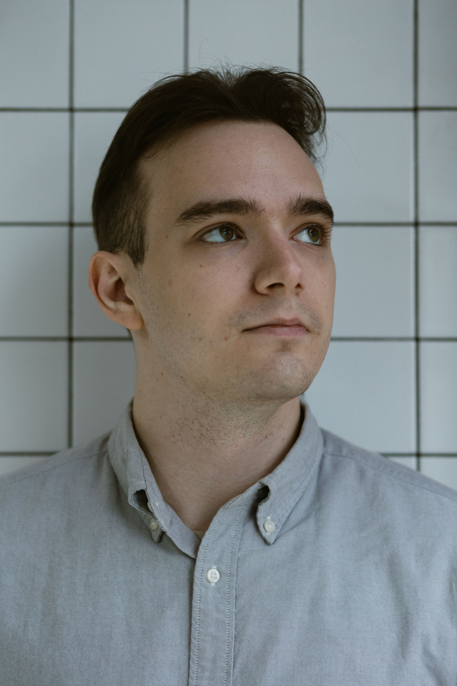

Помогу вам справиться с тревогой, выгоранием и трудностями в отношениях
Андрей Алтухов — клинический психолог, АСТ-, КПТ-, ДПДГ-терапевт. Онлайн и очно, конфиденциально, с уважением к вашему темпу.
Записаться на консультацию
Андрей Алтухов — клинический психолог, АСТ-, КПТ-, ДПДГ-терапевт. Онлайн и очно, конфиденциально, с уважением к вашему темпу.
Записаться на консультацию

Меня зовут Андрей Алтухов. Я клинический психолог, работаю в подходах терапии принятия и ответственности (АСТ), когнитивно-поведенческой терапии (КПТ) и десенсибилизации и переработки движениями глаз (ДПДГ/EMDR) — методах с научно доказанной эффективностью.
Веду частную практику с 2021 года. Мне важно создать атмосферу доверия, в которой возможен искренний разговор без осуждения. Член Ассоциации контекстуально-поведенческой науки с 2023 года.
Опыт работы: Я занимаюсь психологическим консультированием и психотерапией с 2021 года. Сотрудничаю с проектом Психиатр Онлайн с 2023 года. Член Ассоциации контекстуально-поведенческой науки с 2023 года.
Каждый случай индивидуален, но чаще всего ко мне обращаются с этими темами.
Навязчивые переживания, страх, состояния тревоги и неуверенности.
Подавленное настроение, упадок сил, потеря интереса к жизни.
Сложности в паре, одиночество, повторяющиеся паттерны в отношениях.
Самокритика, чувство неполноценности, перфекционизм.
Проработка тяжёлого опыта, флешбеки, избегающее поведение.
Хроническая усталость, потеря мотивации, прокрастинация.
От начала терапии до ее завершения.
Знакомимся, обсуждаем ваш запрос и формулируем цели.
Определяем мишени и определяем стратегию работы с ними.
Работаем над изменением мышления и поведения.
Формируем навыки самопомощи для самостоятельной жизни без терапевта.
Терапия принятия и ответственности (АСТ) — это современное направление психотерапии, выросшее из классического когнитивно-поведенческого подхода и обогащённое практиками осознанности. Она учит не бороться с трудными мыслями и чувствами, а выстраивать с ними новые, более гибкие отношения, что делает психику устойчивее к жизненным трудностям и помогает действовать в согласии со своими ценностями даже в сложных обстоятельствах.
Когнитивно-поведенческая терапия (КПТ) — это структурированный метод работы с мышлением: вместе мы находим искажённые убеждения и автоматические мысли, которые вызывают тревогу и другие тягостные состояния, и постепенно меняем их на более реалистичные и поддерживающие.
ДПДГ/EMDR — это специализированный подход для работы с травматичным опытом. С помощью билатеральной стимуляции (движений глаз) метод помогает психике переработать застрявшие воспоминания и снизить их эмоциональный заряд, запускaя естественные механизмы восстановления.
Мы начнём с обсуждения вашего запроса и целей терапии, а дальше будем работать с мыслями, эмоциями и поведением с помощью АСТ, КПТ или ДПДГ. В зависимости от мишеней терапии, запроса, предпочитаемых методов работы. Я даю домашние задания. В зничетельной степени на эффективность терапии влияет активность клиента между сессиями.
Длительность психотерапии труднопрогранизируемая. Иногда запрос разрешается в пределах 10 сессий, иногда нужно гораздо больше времени. Как бы то ни было, я не буду специально затягивать время терапии, настаривать на ее продолжении. Сделаю все для того, чтобы психотерапия прошла как можно эффективнее и по ее завершении клиент мог помогать себе самостоятельно.
Как правило, оптимальный формат — раз в неделю. Частоту можно менять, например встречаться раз в две недели или раз в десять дней. В некоторых случаях сессии могут происходить и раз в месяц.
Провожу консультации как очно в Москве, так и онлайн на платформе Zoom. Формат можно выбрать исходя из вашего удобства, эффективность работы от этого не меняется
Терапия помогает лучше понимать свои эмоции и мысли, менять дезадаптивные паттерны поведения и находить более устойчивые способы справляться с трудностями.
Да, при необходимости я направляю к проверенному психиатру или работаю в связке с вашим лечащим врачом.
Напишите мне, и мы подберём удобное время для первой консультации.
Написать в Telegram